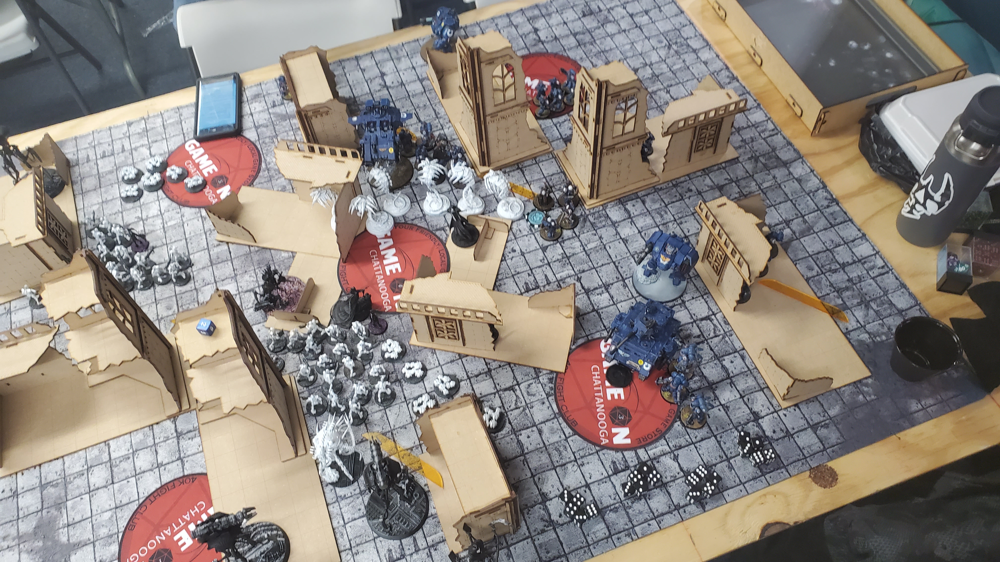

Drawing and Painting

I have been drawing since I was a wee lad, even having one of my artworks framed in the Chattanooga courthouse back when I was in Elementary school. I drew here and there throughout school, but it wasn't until the Covid lockdown that I got serious about drawing. I used the large amounts of downtime to teach myself the fundamentals of art, and working towards improving my art.
3D Printing and Model Building
I originally got into 3D printing so that I could create mini models for my Dungeons and Dragons games. I went into it with no experience and had to teach myself how to effectively 3D print, including the file and support management. A few years later, I got into the tabletop wargame Warhammer 40k, which helped fuel my passion for 3D printing and model creation. Now I have years of experience 3D printing, model creation, and model painting. It has been a great learning experience and has let me save thousands of dollars in hobby purchases alone. Here is my Warhammer Army that I printed, built, and painted myself.
Tabletop Gaming
Ever since late high-school, I have been infatuated with board games, role-playing games, and tabletop wargames. It began when I gathered a bunch of my friends to DM our first DND campaign. We did not have miniatures, only pen, paper, and our imaginations. My fascination with board games continued to grow from there. The last couple years I have been deeply into the Sci-fi setting of Warhammer 40k. I began to play the actual game at the start of 10th edition and so far have been having a blast. The pictures show a few of my games in progress.
Videogames

Like many men these days, I enjoy playing video games and is one of the major influences for pursuing a career in Computer Science and Digital Media. My favorite games are Intense Action games and Emotional Story-driven games. A few of my favorite games of all time are Halo:Reach, SMITE, Final Fantasy XIV, and Total War: Warhammer.
Reading

I have always been an avid reader. I read the entire Harry Potter series while I was still in elementary school, as well as others such as a Series of Unfortunate Events and the Percy Jackson series. My favorite genres have to be science fiction, fantasy, and horror. I also have a deep love for Japanese Manga and Korean Manwha. I believe my exposure to foreign comics sparked my interest in art and the desire to draw. My favorite Manga is BLAME! by Tsutomu Nihei, while my favorite book series is the Chronicles of Malus Darkblade.